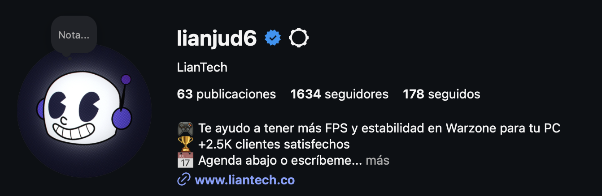
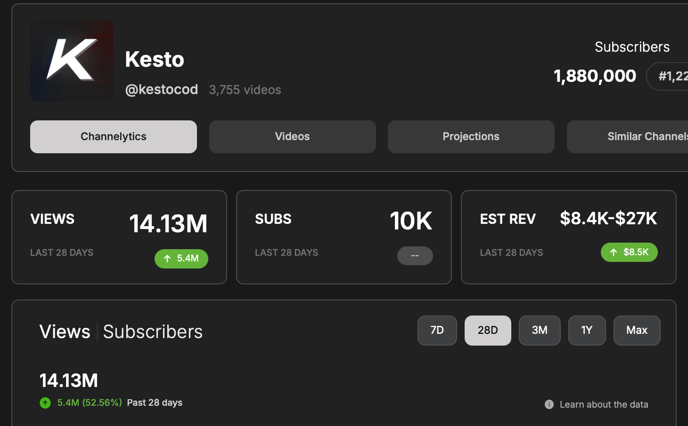
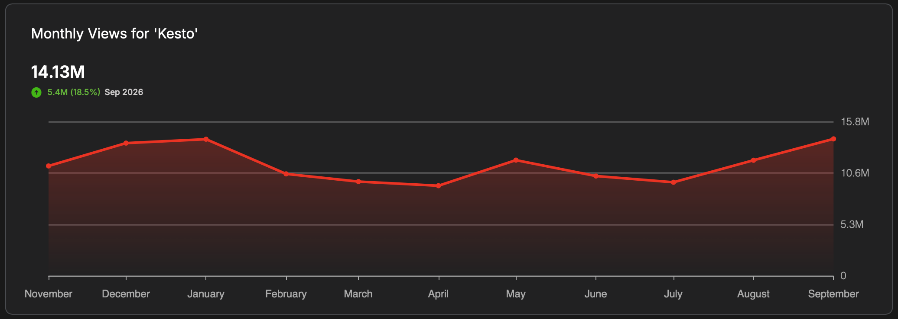
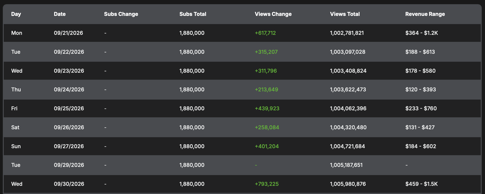

Soy Fabián, fundador de Splash Labs. Me senté en estas mismas aulas: estudié Producción para Medios de Comunicación y después Publicidad. Juntando lo que aprendí en las dos, armé una agencia de contenido digital que trabaja desde Ecuador para clientes de varios países. Armamos esta página para que el equipo de Calzón Quitado nos conozca y pueda evaluar si nuestra charla encaja en el evento.
$5–6Kal mes en ventas para una marca personal con 1.6K seguidores
+1.000Mde vistas en el canal de un creador con el que trabajamos
5 marcasgrandes con proyectos dirigidos por nosotros en white label
Marcas personalesCreadores de contenidoWhite labelMarcas personalesCreadores de contenidoWhite labelMarcas personalesCreadores de contenidoWhite labelMarcas personalesCreadores de contenidoWhite label
La charla que proponemos
Título tentativoEl camino no viene marcado: se abre
Para quién
Estudiantes de carreras creativas que no tienen claro hacia dónde llevar lo que están aprendiendo.
De qué hablamos
Valorar tus habilidades, entender mercados digitales que pocos conocen y cómo la calidad abre puertas.
Con qué
Casos reales con resultados y videos: una marca personal, un creador y proyectos para marcas grandes.
Lo que sigue es un adelanto de la charla, escrito como se lo contaríamos a los estudiantes.
01 · El camino
Dos carreras. Una sola ventaja.
Nadie me ofreció un puesto que se llamara “redes sociales y contenido”. Lo que hice fue mirar lo que ya sabía hacer y preguntarme dónde valía más.
Es exactamente donde las dos se cruzan. Un video que se ve bien pero no tiene una razón para existir no vende. Una gran idea mal producida no la ve nadie. Hacer y pensar, juntos: eso es lo que hoy vendemos.
“
Tu carrera no es un carril. Es una caja de herramientas.
Lo que me hubiera gustado escuchar sentado ahí.
i.No hay un solo camino marcado.
Lo que estudias no define un único trabajo. Puedes abrir uno nuevo, incluso uno que todavía no tiene nombre.
ii.Las habilidades se suman.
Editar + entender al consumidor = contenido que vende. Lo valioso suele estar en la combinación, no en una sola habilidad.
iii.Aprende a valorar lo que sabes.
Algo que a ti te parece básico, como editar rápido o entender una marca, es algo por lo que alguien afuera está dispuesto a pagar.
02 · Qué hacemos
Hacemos que las redes generen dinero.
Splash Labs es una agencia de producción y distribución de contenido digital. Trabajamos con tres tipos de clientes, y a cada uno lo atendemos distinto.
Lo que hacemosEstrategia de contenidoGuiones y ángulosEdiciónDiseñoMotion graphicsCGI / VFXClippingDistribución
03 · La idea central
Misma meta. Distinta moneda.
A creadores y a marcas personales los ayudamos a lo mismo: ganar más dinero con redes sociales. Pero no cobran con la misma moneda. Si no entiendes eso, haces el contenido equivocado para el cliente correcto.
Creadores de contenido
Vistas
Cada vista paga dos veces: la plataforma le paga por su contenido, y las marcas le pagan por llegar a su audiencia.
Éxito es…
Que lo vean más personas, más seguido
Medimos
Vistas, retención, frecuencia
Producimos
Volumen, ganchos, clips, constancia
vs.
Marcas personales
Ventas
Una vista no paga nada por sí sola. Lo que importa es cuánta gente escribe, agenda o compra el producto o servicio.
Éxito es…
Que la persona correcta compre
Medimos
Mensajes, agendas, ventas
Producimos
Ángulos que tocan un problema real
La meta de los dos es la misma: más dinero. El camino para llegar ahí es otro.
Una agencia típica
“Te damos 12 posts al mes”
El mismo paquete para todos los clientes
Empieza por el formato: reels, carruseles, historias
Reporta likes y seguidores
Lo que hacemos nosotros
“¿Con qué moneda cobras tú?”
Primero entendemos cómo gana dinero el cliente
Después diseñamos el entregable que mueve esa moneda
Medimos lo que paga: vistas o ventas
Cómo entender un mercado que no conoces
Clipping, marcas faceless, campañas con creadores… Ninguno de estos mercados me lo enseñaron en clase. Así los aprendí:
Sigue el dinero
¿Cómo gana plata tu cliente? ¿Anuncios, ventas, campañas con marcas? Esa respuesta define todo lo demás.
Vive en la plataforma
Consume lo que consume su audiencia hasta entender qué funciona, y sobre todo por qué funciona.
Elige el número que importa
Un like no siempre es una venta. Encuentra la métrica que de verdad cambia el negocio del cliente.
Diseña al revés
Del resultado hacia el formato, no del formato hacia el resultado. El entregable es la consecuencia, no el punto de partida.
01 Marca personal · moneda: ventas
1.634 seguidores. $5–6K al mes en ventas.
Lian (LianTech) ayuda a gamers a tener más FPS y estabilidad en Warzone optimizando su PC. Es una marca personal faceless: nunca muestra su cara, su identidad es un personaje. Y aun así vende.
Perfil de Instagram

$5–6Ken ventas al mes generadas con contenido
1.634seguidores: no hace falta ser famoso para vender
0veces que aparece su cara en cámara
La estrategia
Ángulos ganadores
Un ángulo es la puerta por la que entras a vender lo mismo. El servicio no cambia; lo que cambia es el problema que tocas en los primeros segundos.
Probamos ángulos, vemos cuáles traen clientes y producimos más de los que ganan.
Optimización de PC“Te eliminan y no sabes por qué”Input lagMilisegundos que cuestan partidasTu equipo vs. tu movimiento
Por qué funciona
Habla del problema, no del producto
Su cliente no busca “optimización de PC”: busca dejar de perder partidas. El contenido usa gameplay y texto dinámico para que el problema se entienda en un segundo, sin sonido y sin cara.
La métrica que miramos no son los likes: son las personas que escriben y agendan.
Pieza 01“Si en Warzone te eliminan…”Abre con la frustración que el cliente ya siente.
Pieza 02“¿Sabes la diferencia…?”Una pregunta como gancho para explicar el problema técnico.
Pieza 03Input lagLe pone nombre a lo que el jugador siente pero no sabe explicar.
Desliza para ver los tres →
!
No necesitas millones de seguidores para vender.Necesitas que la persona correcta vea el mensaje correcto. Para una marca personal, mil seguidores que compran valen más que cien mil que solo miran.
02 Creador de contenido · moneda: vistas
Aquí la moneda son las vistas.
Kesto es creador de contenido gaming. Con él la estrategia es otra: no se trata de vender un servicio, sino de que su contenido llegue a la mayor cantidad de gente posible, todos los días.
1,88Msuscriptores en YouTube
+1.005Mvistas totales en el canal
14,1Mvistas en los últimos 28 días
3.755videos publicados: el volumen importa
Datos públicos de su canal de YouTube vía Channelytics, septiembre de 2026.
Canal · 28 días

Vistas por mes

Vistas por día

Una vista, dos formas de cobrar
Por eso para un creador lo que más importa es el volumen de vistas: de ahí sale todo lo demás.
Vistasla moneda
1
La plataforma le pagaYouTube y las demás redes pagan por las reproducciones de su contenido.
$
2
Las marcas lo buscanUn perfil con mucho tráfico atrae campañas: las marcas pagan por aparecer frente a su audiencia.
$$
El ciclo: más clips → más vistas → más ingreso por plataforma → más marcas interesadas → más campañas
Un mercado que pocos conocen
¿Qué es el clipping?
Tomamos el contenido largo de un creador, como partidas, streams o videos, y lo cortamos en muchos clips verticales con los mejores momentos para Shorts, TikTok y Reels.
Cada clip es una oportunidad más de que el algoritmo lo recomiende. El creador no tiene que grabar más: su mismo contenido llega a mucha más gente.
Entender lo que necesita
No es un paquete, es una mezcla
A Kesto no le sirve el mismo plan que a Lian. Combinamos tres tipos de pieza según lo que mueve su moneda:
Clipping para volumen, contenido más editado para retener y construir marca, y campañas para monetizar ese tráfico con marcas.
ClippingVolumenMomentos de partida recortados y listos para el feed vertical.
Contenido editadoRetenciónMás narrativa, gráficos y ritmo para que se queden viendo.
CampañaMonetizaciónUna marca paga por llegar a su audiencia. Las vistas se convierten en contratos.
Desliza para ver los tres →
!
Entiende qué necesita cada cliente, no qué sueles entregar.Lian y Kesto quieren lo mismo: ganar más dinero con redes. Pero si a Kesto le hubiéramos hecho el contenido de Lian, o al revés, ninguno habría crecido.
04 · White label
La calidad abre puertas que no llevan tu nombre.
White label es producir para agencias, productoras y empresas que entregan el trabajo con su marca. El cliente final no siempre sabe que fuimos nosotros, y está bien: gracias a la calidad que manejamos, hemos dirigido proyectos para marcas como estas.
Krispy KremeCyranoCoca-ColaMulticinesSan Patricio
Por qué importa
La calidad es la carta de presentación
En white label nadie te contrata por tu nombre: te contratan porque el trabajo resiste estar frente a una marca grande. Cada proyecto bien hecho trae el siguiente.
Para ti
Puedes trabajar para marcas grandes antes de que tu nombre sea grande
El white label es una forma real de entrar a la industria, armar portafolio y facturar mientras construyes tu propia marca.
05 · Lo que se llevarían
Cinco ideas para llevarse.
1El camino no viene marcado.
Lo puedes abrir tú, aunque todavía no tenga nombre.
2Tus habilidades valen más juntas.
Producción + publicidad fue mi combinación. ¿Cuál es la tuya?
3Pregunta con qué moneda cobra tu cliente.
Vistas o ventas: cambia todo lo que produces.
4Seguidores no es igual a dinero.
1.634 seguidores, $5–6K al mes. El público correcto gana.
5La calidad abre puertas.
Aunque la puerta no lleve tu nombre todavía.
Gracias
Gracias por considerarnos.
Si creen que esta charla le suma a Calzón Quitado, nos encantaría ser parte. Escríbanme para conversar y coordinar.